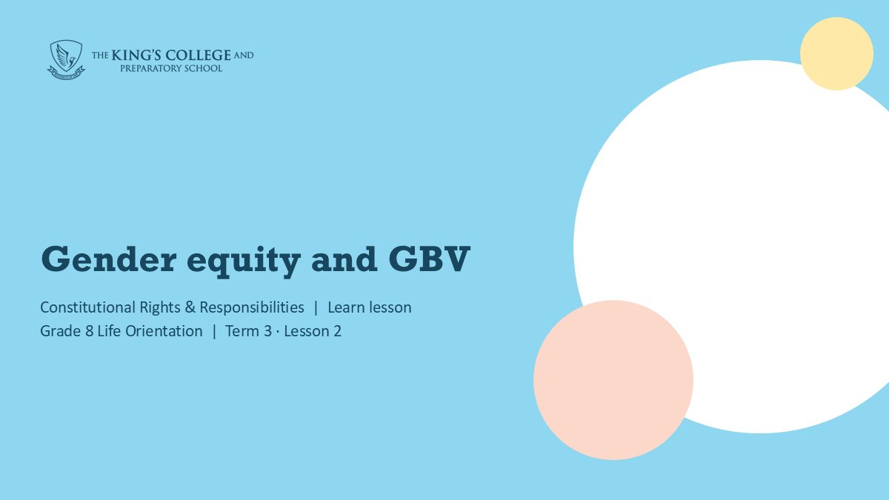

Term 3 · Lesson 2 · Learn lesson
Gender equity and GBV
Start here
Today I will
- Differentiate between gender equality and gender equity
- Recognise the forms of gender-based violence
- Know the law and where to get help
Name three famous South African sportsmen. Now name three famous South African sportswomen. Which was harder, and why?
Words to know
- Gender
- The roles, behaviour and expectations that a society links to being a man or a woman.
- Gender equality
- Men and women have the same rights, opportunities and treatment.
- Gender equity
- Being fair to men and women by giving extra support where one group has been disadvantaged, so that the result is equal.
- Stereotype
- A fixed, oversimplified idea about a group of people, e.g. 'girls can't play basketball'.
- Gender-based violence (GBV)
- Violence or abuse aimed at someone because of their gender.
- Protection order
- A court order that forbids an abuser from contacting or harming the victim.
Slides

Videos
Notes
The Bible teaches, and the Constitution agrees, that men and women have equal dignity. Yet in South Africa women and girls still face unfair treatment, and gender-based violence is a serious problem. Understanding gender equity helps us to build fairness at school and in sport, and knowing about GBV, the law and where to get help can protect you and others.
Key ideas: gender, stereotypes and equal dignity
Gender refers to the roles, behaviour and expectations that a society links to being a man or a woman. Some of these expectations are helpful, but some are unfair stereotypes: fixed, oversimplified ideas about all boys or all girls, such as 'boys don't cry', 'girls can't lead' or 'girls' sport isn't real sport'. Stereotypes limit people and can be used to justify unfair treatment.
Section 9 of the Bill of Rights forbids unfair discrimination on the grounds of gender or sex. Men and women have the same rights and must be given the same opportunities.
Equality and equity
| Gender equality | Gender equity | |
|---|---|---|
| Meaning | Men and women have the same rights, opportunities and treatment. | Being fair by giving extra support where one group has been disadvantaged, so that the result is equal. |
| Focus | Treating everyone the SAME. | Treating people FAIRLY according to need. |
| School example | Boys' and girls' teams each get one hour on the court. | A new girls' team with no equipment gets extra money and coaching to catch up. |
| National example | Men and women may apply for the same jobs. | Bursaries and programmes that help women enter careers where they were excluded, e.g. engineering. |
Equity is the road; equality is the destination. Because women and girls were held back for a long time, simply treating everyone the same today does not yet make things fair.
Gender equity in sport
Sport is a good place to see whether things are fair. In many countries, including South Africa, women's sport has received far less money, coaching, media coverage and prize money than men's sport. This is changing slowly.
- Banyana Banyana (the national women's football team) won the Women's Africa Cup of Nations in 2022.
- The Proteas Women reached the final of the ICC Women's T20 World Cup in 2023 and in 2024.
- Girls who play sport build fitness, confidence, teamwork and leadership, the same as boys.
- Ways to make school sport fairer: share facilities and the best practice times, give girls' matches the same announcements and supporters, and offer the same coaching and equipment.
What is gender-based violence?
Gender-based violence (GBV) is violence or abuse aimed at someone because of their gender. It usually comes from unequal power between men and women. Most victims are women and girls, but boys and men can also be victims. GBV can happen at home (domestic violence), at school, in the community or online.
| Form of GBV | Examples |
|---|---|
| Physical | Hitting, slapping, pushing, kicking, choking, using a weapon. |
| Emotional and verbal | Insults, threats, humiliation, constant put-downs, controlling who someone may see or talk to. |
| Economic | Taking someone's money, not allowing them to work or study, refusing to support children. |
| Online | Threatening messages, stalking, sharing private photos or information to shame or control someone. |
| Sexual | Any unwanted sexual touching or act. It is a serious crime and is never the victim's fault. |
Causes and effects of GBV
| Causes | Effects on victims |
|---|---|
| Beliefs that men are more important than women or may control them | Physical injuries, and sometimes death |
| Violence learnt by growing up around it | Fear, shame, guilt, anxiety and depression |
| Alcohol and drug abuse | Falling school marks, dropping out, losing a job |
| Media and music that make violence against women seem normal or funny | Loneliness and difficulty trusting people |
| Silence: people who know about abuse but say nothing | Children who see violence may repeat it or become victims later |
GBV and the law
- GBV is a crime. The Bill of Rights protects everyone's right to dignity and to freedom and security of the person (sections 10 and 12), including the right to be free from violence.
- Under the Domestic Violence Act (116 of 1998), a person experiencing domestic violence can apply at a magistrate's court for a protection order, which forbids the abuser from contacting or harming them. Breaking the order can lead to arrest.
- The Children's Act (38 of 2005) protects children from abuse and neglect, and requires teachers, doctors and social workers to report suspected abuse of a child.
- No culture, tradition or religion makes violence against women or children acceptable.
Where to get help
- In danger right now: SAPS (police) 10111.
- GBV Command Centre: 0800 428 428 (free, 24 hours).
- Childline: 116 (free, 24 hours, for anyone under 18).
- A parent, a trusted adult, a teacher or the school counsellor.
- A clinic or hospital, for medical care and support.
- If a friend tells you about abuse: listen, believe them, tell them it is not their fault, and help them tell a trusted adult. Don't promise to keep it a secret.
Being an upstander
Most GBV starts with attitudes and 'jokes' that make disrespect seem normal. Everyone can help to change this: refuse to laugh at sexist jokes, speak up when someone is disrespected, treat everyone with respect in your own relationships, and report violence. Boys and young men have a special role to play: when they show respect, others follow.
Where do gender stereotypes come from?
We learn ideas about boys and girls from a young age: from toys and clothes, from what adults praise, from films, adverts and music, and from what our friends think is 'normal'. Some of these messages are unfair, for example that girls are weaker, that boys must never show feelings, or that only men can lead. Stereotypes can stop people from using their God-given gifts. A girl may never try engineering, or a boy may be afraid to say he loves art or dancing.
Healthy and unhealthy attitudes
| Unhealthy attitude | Healthy attitude |
|---|---|
| 'Men should be in control of women.' | Men and women have equal dignity and make decisions with respect. |
| 'Real men don't cry or ask for help.' | Strong people talk about their feelings and ask for help when they need it. |
| 'If she's jealous, it means she loves you.' | Love is patient and kind; controlling someone is not love (1 Corinthians 13:4–5). |
| 'What happens at home is private.' | Violence is a crime wherever it happens, and victims deserve help. |
Case study: Mia joins the basketball team
When King's started basketball, Mia decided to try it as well as netball. The new girls' team had to practise outside on a cracked court with old balls, while the boys' team (where Thabo plays) had the indoor court every afternoon. A boy in her class joked that 'girls' sport isn't real sport'. Instead of arguing in the group chat, Mia, Thabo and Aarav wrote a short proposal: the teams would take turns on the indoor court, and the boys' team would give their spare balls to the girls. Thabo took it to Coach Ricardo, the head of sport, who liked the idea and put up a new practice timetable. By the end of the term, more girls had joined and the boys started coming to watch the girls' matches.
Questions to think about: Was the new timetable an example of equality or equity? Which stereotype did the friends challenge? Why did a proposal work better than an argument online?
Supporting a friend who is experiencing abuse
- Listen calmly and believe them.
- Tell them it is not their fault.
- Don't promise to keep it a secret; explain that you care too much to stay silent.
- Help them tell a trusted adult, or tell one yourself: a parent, a teacher or the school counsellor.
- If someone is in immediate danger, phone SAPS on 10111. For advice, phone the GBV Command Centre (0800 428 428) or Childline (116).
Worked exam answers
Question: Differentiate between gender equality and gender equity. (1 x 2) (2)
Answer: Gender equality means men and women get the same rights and treatment ✓, whereas gender equity means giving extra support to the group that has been disadvantaged so that the result is fair ✓.
Question: Explain how a protection order can help a victim of domestic violence. (1 x 2) (2)
Answer: A protection order is a court order that forbids the abuser from contacting or harming the victim ✓, so the victim is safer and the abuser can be arrested if he breaks the order ✓.
Practise differentiating between gender equality and gender equity (use 'whereas'), give an example of a stereotype, name at least three forms of GBV, and name two places to get help. Explain how a protection order helps.
Men and women have equal dignity. Violence is never OK: speak up and get help.
In class: Fair play audit
- List the sports at our school for boys and for girls.
- Compare: practice times, coaching, crowds at matches, announcements in assembly.
- Find ONE thing that is equal and ONE thing that could be fairer.
- Recommend ONE change, and say whether it is equality or equity.
- Share your recommendation with the class.
Test yourself
- Differentiate between gender equality and gender equity.
- Name THREE forms of gender-based violence.
- Give ONE place where someone can get help for GBV.
Show answers
1. Equality gives men and women the same rights and treatment, whereas equity gives extra support where one group has been disadvantaged so that the result is fair. 2. Any three: physical, emotional/verbal, economic, online, sexual. 3. Any one: GBV Command Centre 0800 428 428, SAPS 10111, Childline 116, a teacher or the school counsellor.
Finished early?
Write a short proposal to make one school sport fairer.
- Think of one way school sport could be fairer for girls or boys (practice times, equipment, supporters or announcements).
- In your LO book, write a short proposal to Coach Ricardo, the head of sport: the problem, your idea and the result you expect.
- Say whether your idea is an example of equality or equity, and why.
- Keep it to five sentences or fewer. (This is practice, so you don't need to hand it in.)